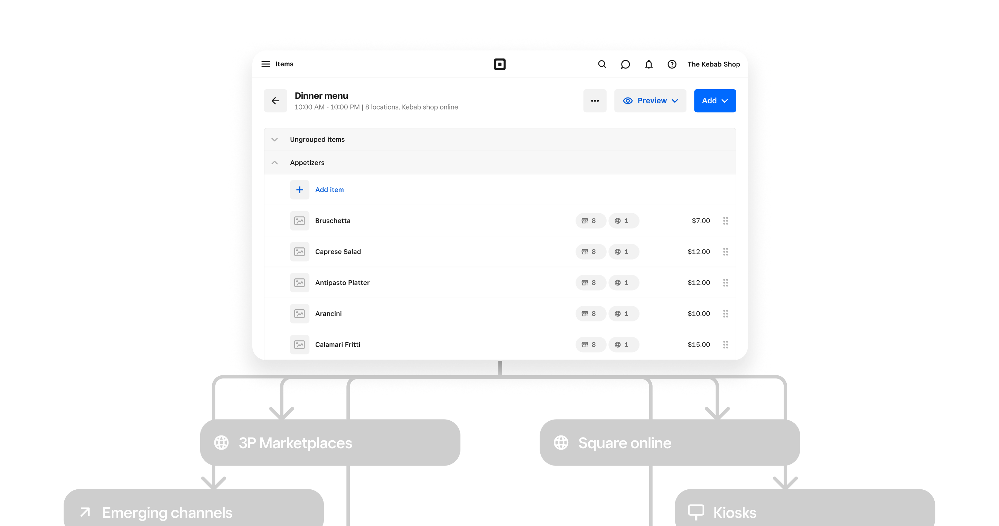
Omnichannel Menus
Restaurants using Square had to manage separate menus for POS, online ordering, and other channels, creating duplicate work and inconsistencies. Omnichannel Menus unified menu management on Square's Platform Catalog so restaurants could manage their menu once and power every ordering channel.
Role
Product designer
Timeline
6 months
Goals
Help merchants control what they sell, everywhere
Create a unified menu model that could power POS, ecommerce, and future third-party ordering channels from a single source of truth.
Align the Menus product with the platform
Bring the diverged Restaurants menu system back onto Square's Platform Catalog where possible, while extending the platform to support F&B-specific requirements.
The experience
The new system allowed restaurants to manage their menu once while powering multiple ordering channels.
Unified menu management
Restaurants can control how items appear across different ordering contexts such as POS, online, kiosk, and more channels
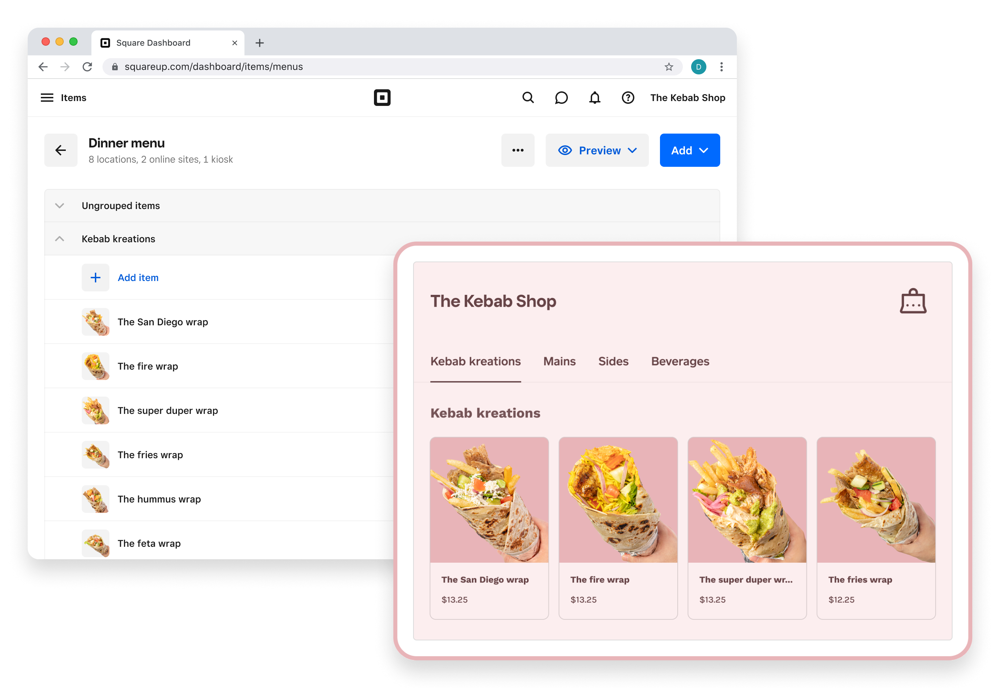
Easy to refine where items are sold
Some items don't travel well. Some items can't be sold online (think alcohol). Some items are only available at certain locations.
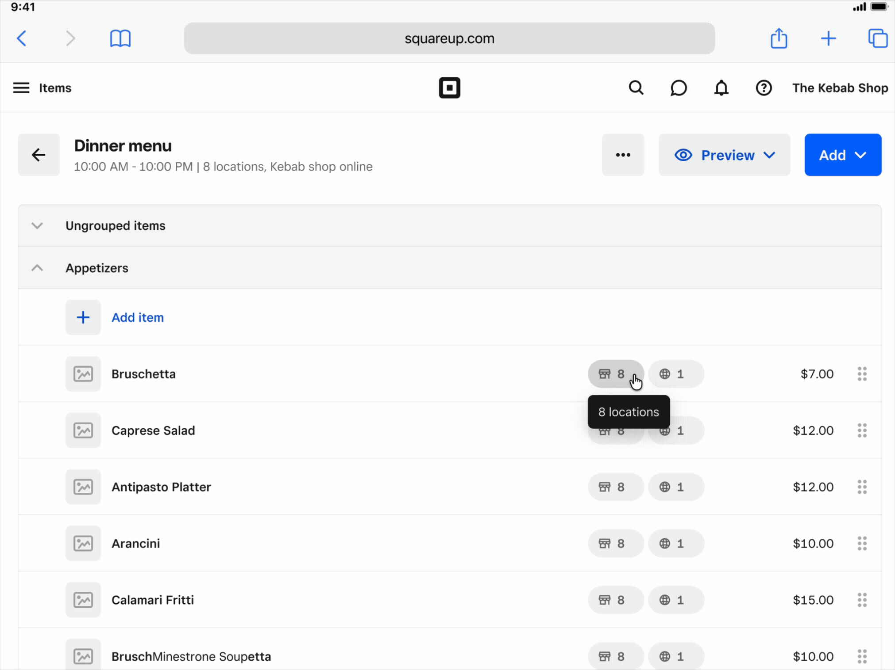
Instant, granular propogation
Restaurants manage items, modifiers, and pricing in a single menu structure. Updates propagate automatically across POS, kiosk, and ecommerce.
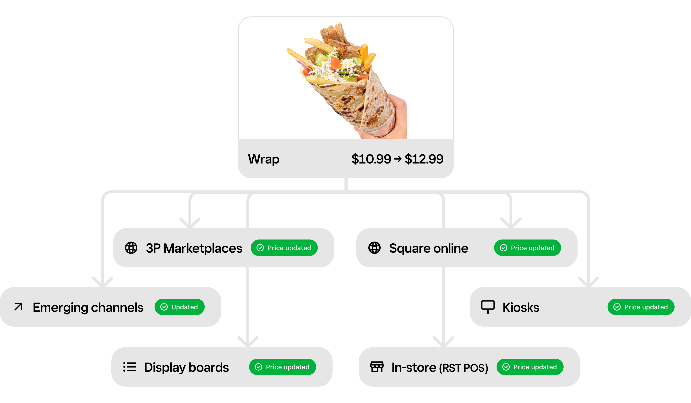
Clear system feedback
The interface helps merchants understand how menu changes propagate across channels, reducing operational risk when updating items or availability.
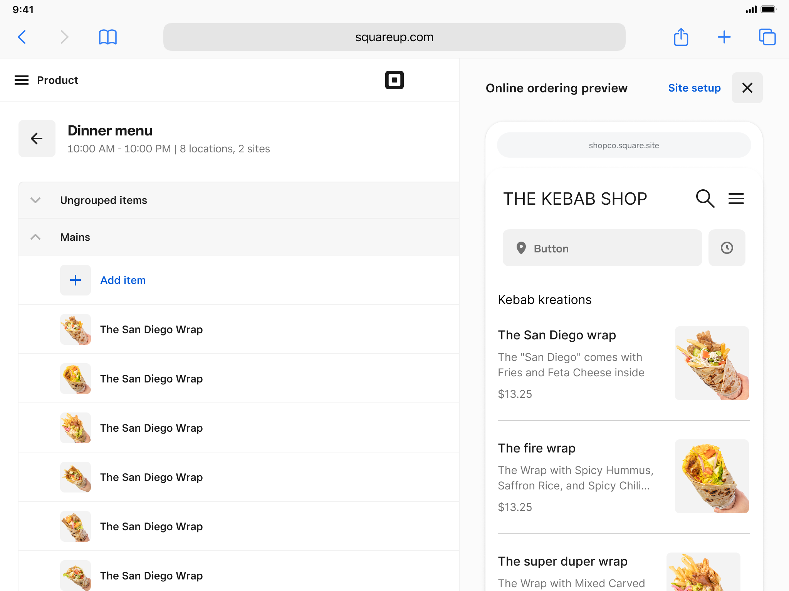
Strategy & vision
The two most important parts of the strategy and vision are the following:
One-stop-shop
Square's long-term strategy was to become the system of record for what merchants sell, powering not only POS but ecommerce, delivery, and future third-party ordering channels.
Aligning with the platform
Before this project, the Menus product had diverged from Square's Platform Catalog. I ensured we brought restaurants back onto the platform where possible, while extending the Catalog to support restaurant-specific needs.
System design
The core challenge was designing a system that balanced platform consistency with the operational complexity of restaurant menus.
1. A shared source of truth
Brought menus onto the platform so that menus would get future features built into the Catalog Platform for free. This required aligning to their system where possible. See the largely shared items details page to the right.
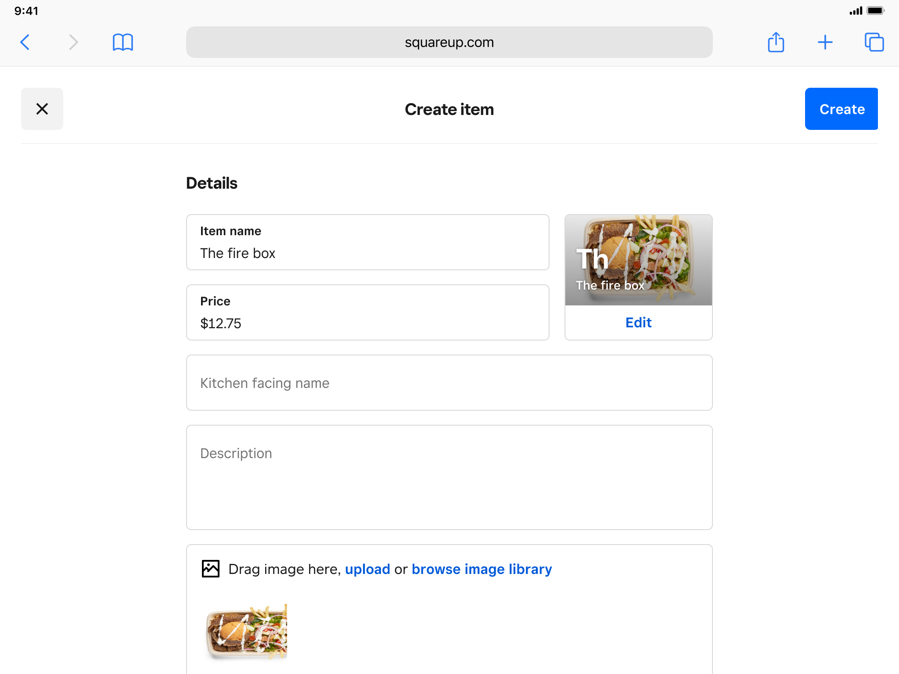
2. Restaurant structures on top of the platform
Restaurants require additional structure beyond flat catalogs. To support this, I pushed for the platform to evolve to support restaurant concepts on top of the platform such as menus and sections (i.e., "Menu groups", shown to the right).
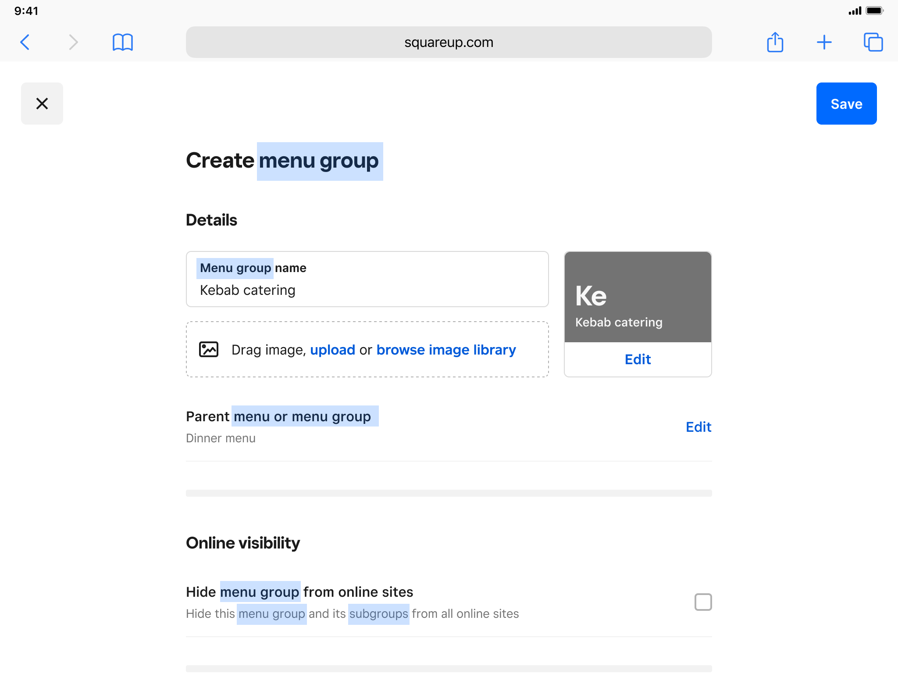
3. Building omnichannel constructs into the platform, inherited by menus
Now that menus was on the platform, I worked with the platform team to design omnichannel sales constructs into the platform, so all verticals, including restaurants could sell online easily.
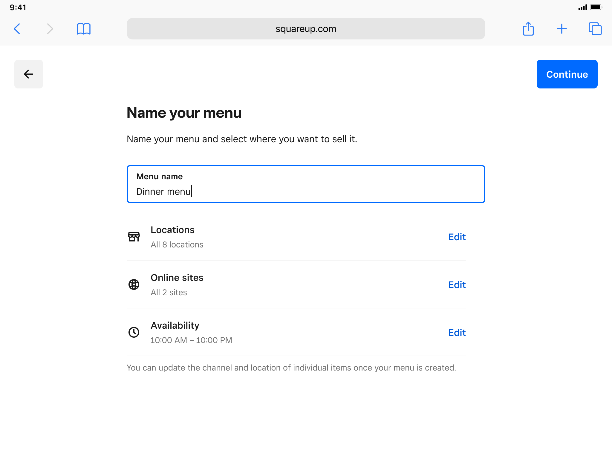
4. Channel-specific exceptions
This system I designed allowed merchants to fully share a menu across channels, share only parts of a menu, or easily create channel-specific one-offs where needed.
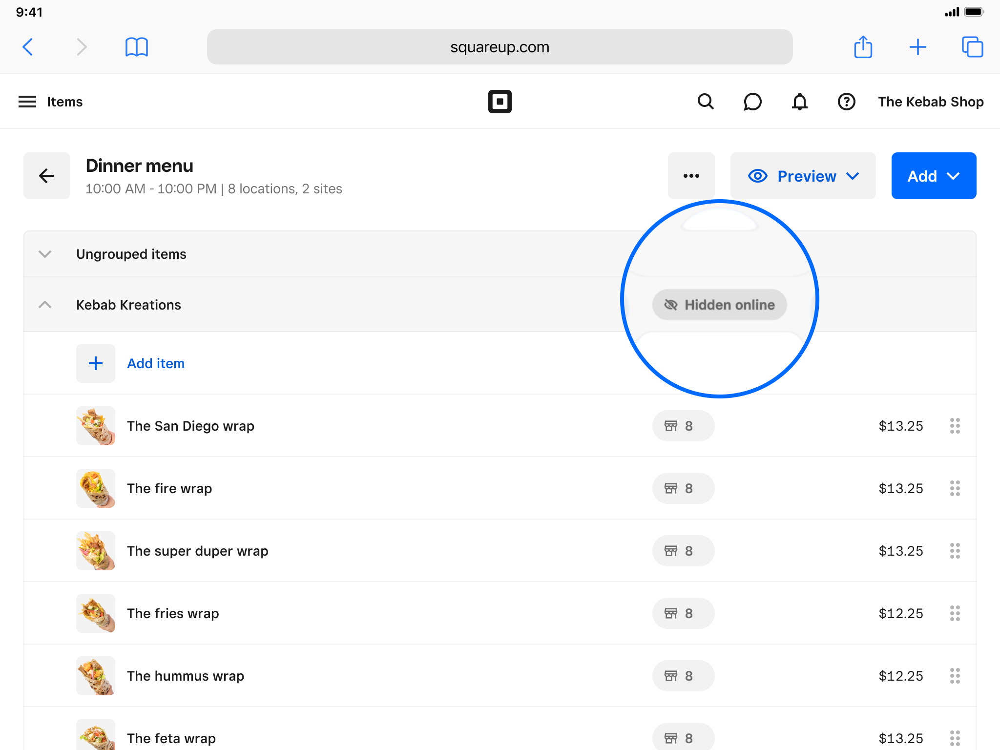
5. Safe propagation across products
Because menu data powers multiple products, the system needed clear and predictable edit behavior. The interface surfaced how menu changes propagate by showing previews of channel-specific organization, such as online sites (shown above) and POS grids (to the right).
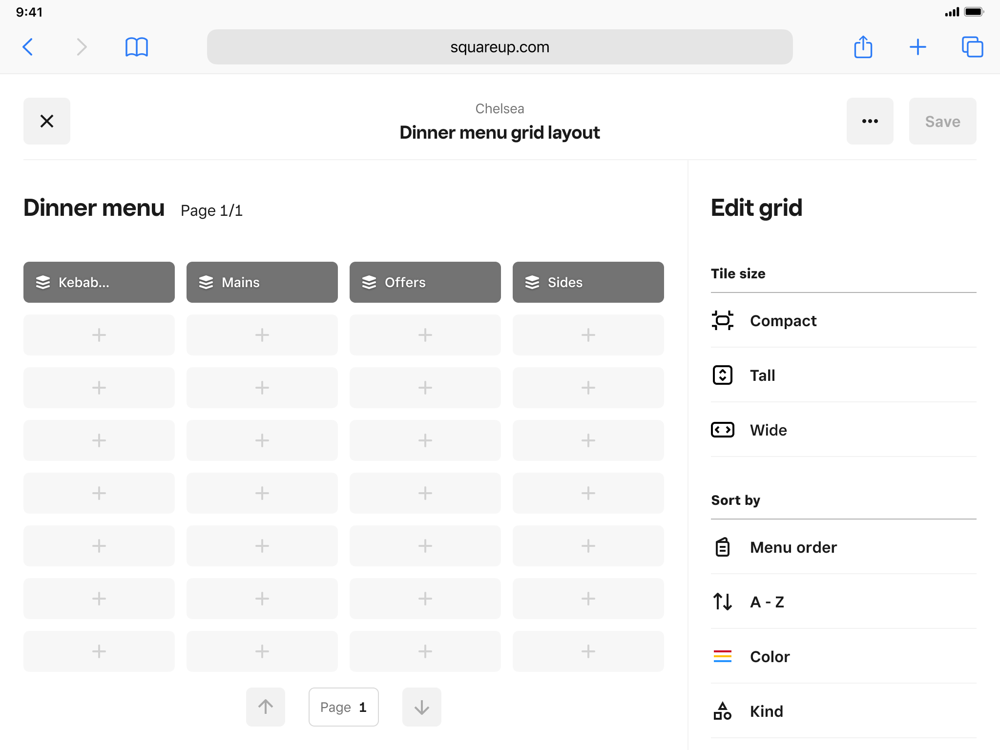
The details & handoff
Building a new system for the Menus product came with a large surface filled with edge cases and details to iron out, requiring close collaboration with engineering.
Designed specs for each component
Ensuring components were built correctly the first time, especially when tweaks to the UI System components were required.
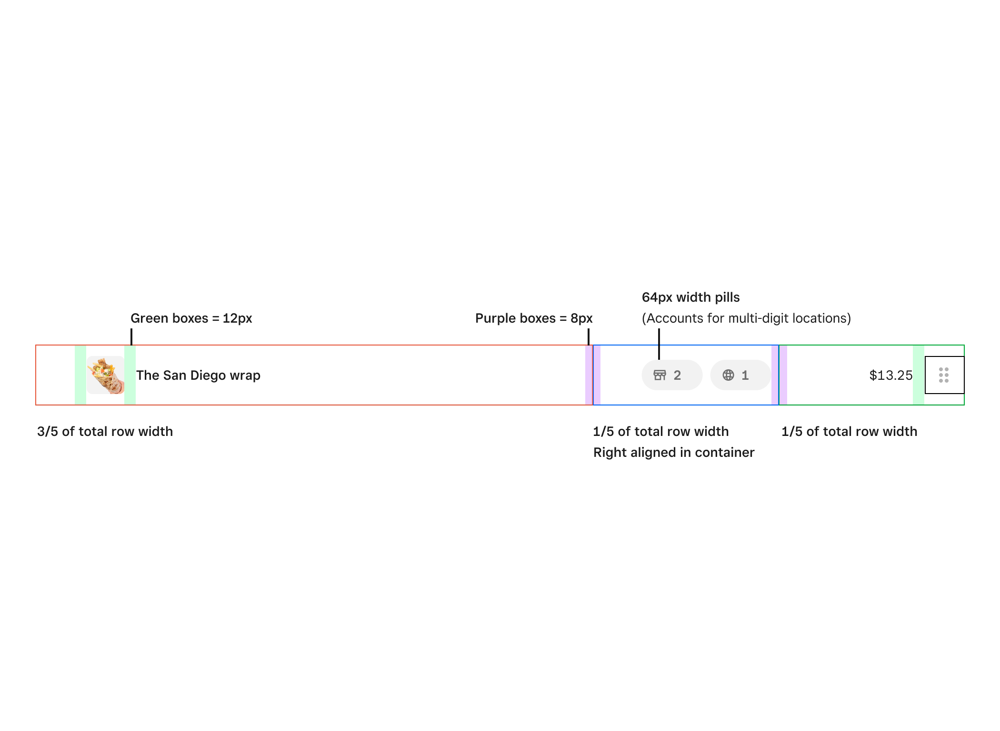
Detailed logic docs for every aspect of the system
Ensuring the logic of how the system was designed was well thought-through and documented before handoff.
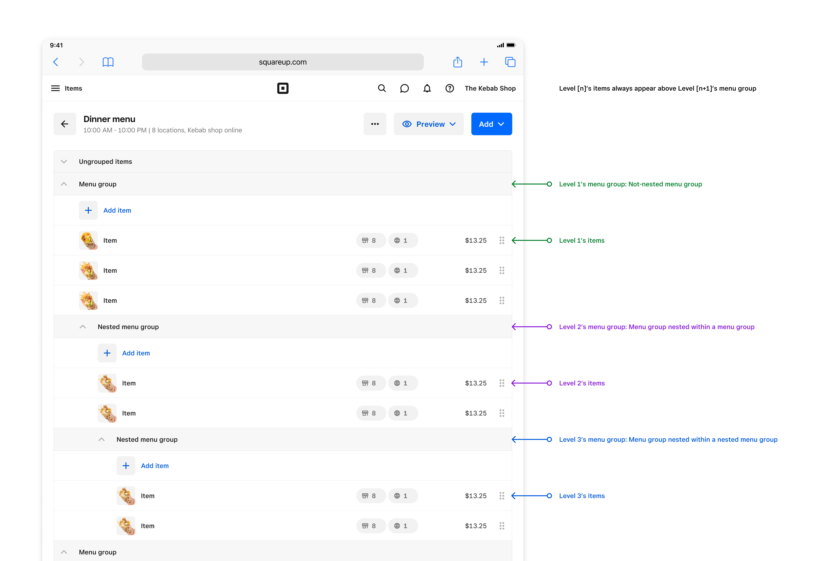
Accounted for every loading state, error, and edge cases across every page
Ensure that every aspect of the system accounted for loading, error states, and edge cases across the vast surface.
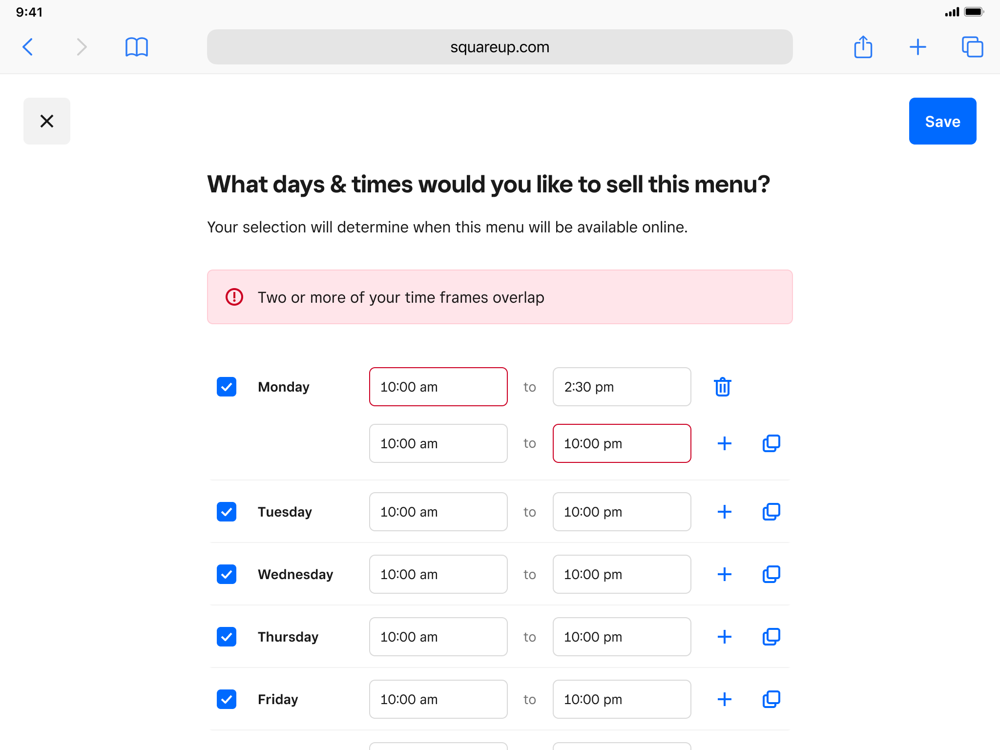
Outcome
Omnichannel Menus established a shared system for managing restaurant menus on Square's platform. More importantly, the project laid groundwork for Square's long-term platform strategy, allowing menu data to scale beyond POS into ecommerce, delivery integrations, and future ordering surfaces.